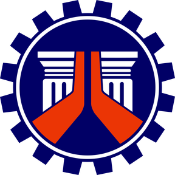
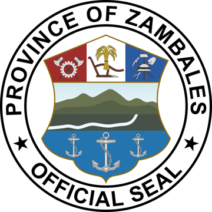
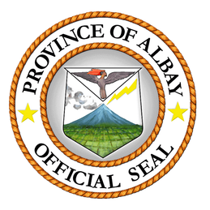
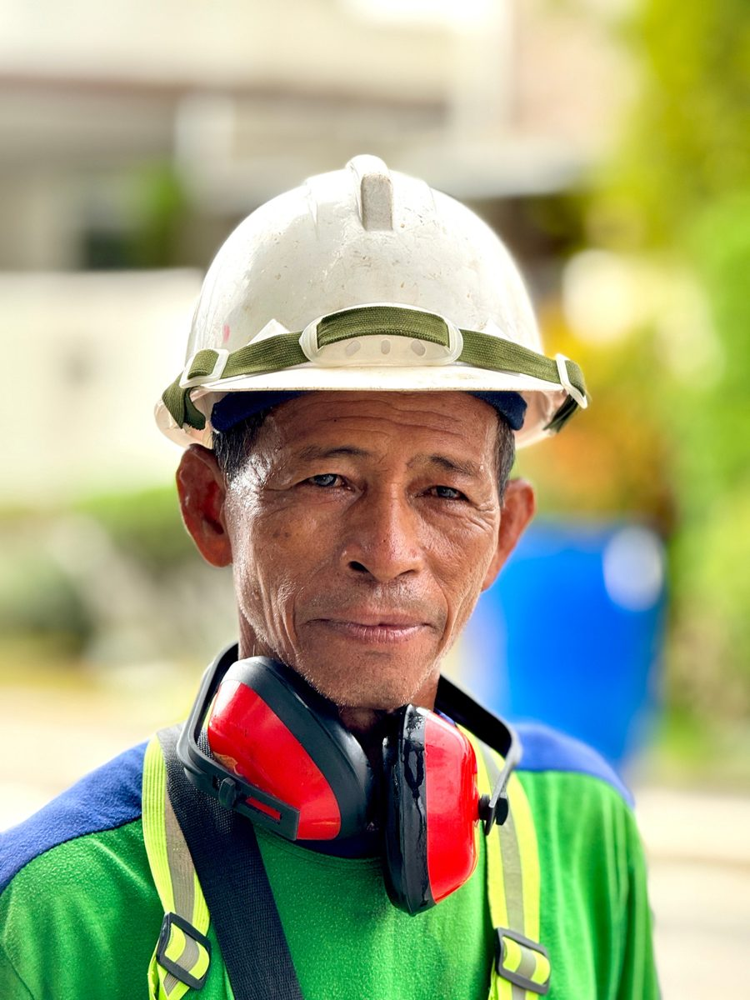

Roadways & Airports
Civil works for roadways and domestic airports — from earthworks to paving, built to national standards.
Victory Infrastructures Company, OPC is a PCAB-licensed Philippine contractor trusted by government and private institutions — delivering civil works for domestic airports, roadways, flood control systems, buildings, and water pipelines.
Trusted by the institutions that build the Philippines



About Us
Victory Infrastructures Company, OPC — formerly known as Victor M. Daet Construction & Supply — was established on March 21, 1991 and issued PCAB Contractor's License No. 15621 in 1992. The company completed numerous registered projects across the Bicol Region before expanding to Metro Manila in 2003, and has been headquartered in Maysan, Valenzuela City since 2009.
With over 35 years of experience in infrastructure development, we continue to support the Philippines' growth through reliable, high-quality results and a strong commitment to service excellence.

Our Guiding Principles
To be a diversified enterprise delivering cost-effective, high-quality construction services — creating meaningful employment, providing value to our clients, and contributing positively to the communities we serve.
To be a prestigious organization delivering world-class projects in the Philippines, guided by excellence, integrity, and trusted partnerships in nation-building.
Our Services
With operational presence in Quezon City and Valenzuela City, we deliver construction grounded in technical experience, regulatory compliance, and quality workmanship — for government and private infrastructure projects.
Civil works for roadways and domestic airports — from earthworks to paving, built to national standards.
Flood control, drainage, slope protection, and sea walls that protect communities and infrastructure.
Water pipeline installations and expansions for utilities and local governments.
Public buildings, health offices, and facilities delivered end-to-end from foundation to turnover.
Completed Projects
Three decades of proven excellence — high-quality output across projects of varying scale, delivered consistently to the highest standards. A few examples:
₱61.9M
₱16.4M
₱10.6M
Complete list of completed and ongoing projects, searchable by client and year.
Company History
Rooted in the Bicol Region, expanded to Metro Manila, and delivering projects across the country.
1991
Established March 21, 1991 as Victor M. Daet Construction & Supply, serving the Bicol Region.
1992
Issued Contractor's License No. 15621 by the Philippine Contractors Accreditation Board.
2003
Expanded operations with a branch office in Quezon City.
2009
Head office relocated to Maysan, Valenzuela City — the company's home today.
Leadership
Centralized leadership with engineering judgment on every project.
Engr. Victor M. Daet
President
Founder of the company in 1991 as Victor M. Daet Construction & Supply, Engr. Daet brings over 35 years of infrastructure experience — leading every project with engineering judgment, streamlined decisions, and dependable delivery.
Contact
We are ready to partner with government agencies, private organizations, and communities to deliver projects that create lasting impact.